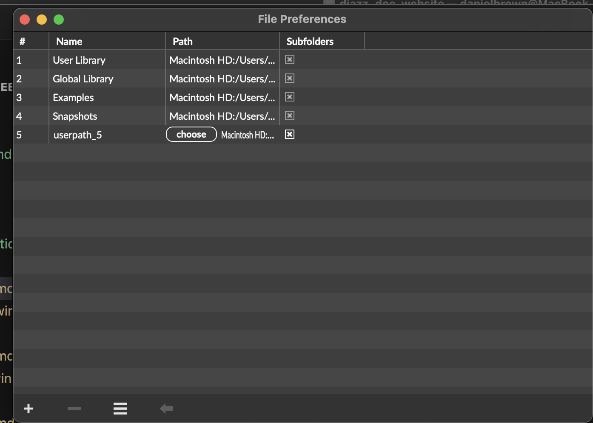

Chapter 1
Subsections of Manual
Installation
Djazz needs no special installation. Download the djazz folder here
Or, if you have git installed, via Terminal:
git clone https://github.com/DYCI2/Djazz_2.0Open Max.
Select Options from the menu bar at the top of the screen.
Select File Preferences from the dropdown menu that appears.
In the File Preferences window that appears, select “choose path.”
In the file browser menu that appears, select the “djazz” folder you have just downloaded. 
Djazz uses externals that are included in the Djazz folder. They do not require extra installation, although your operating system may ask if you want to allow them to run.
Main Window

1. MIDI/audio window selectors

Clicking on the button labeled “MIDI” or “Audio” will open and close the MIDI or audio interface window, respectively.
You can also use the key commands “m” (lowercase) to open/close the MIDI window or “a” (lowercase) to open/close the audio window.
2. Beat input window
3. Song selector

To load a song grid, select a song using one of these controls. Songs are loaded by selecting folders, not individual files. Each folder contains various files pertaining to the song like scores and JSON metadata files.
- Drag and drop a song folder here.
- Browse for a song folder. To select a song, click on its folder.
- Clear the current song.
- Select a preloaded song from the dropdown menu.
4. Song Grid
5. Data View

- BEATS: total number of beats in the song
- SECTION: whether section is looped, and number of beats in current section
- TEMPO: current tempo. Note: if the [beat input] comes from Djazz’s metronome or a remote metronome, this will not change. If the beat input is manual, or if the remote source is a manual tap, this may fluctuate.
- BEAT Number of current beat playing
- LABEL Label of current beat playing, according to the loaded song file
6. Global Effects

These effects are the same as the ones used in MIDI scores, MIDI tracks, and audio tracks. Changing a control in the global effects bar will change the corresponding effect in every one of these other effects bars.
7. GLOBAL AUDIO INPUT/OUTPUT

Audio On
Clicking on either the microphone icon or the loudspeaker icon will turn the audio on.
Audio Monitor Level (Microphone)
Controls the monitor level of the audio input. The button labeled “M” below the microphone-icon button mutes audio input.
Audio Record Level
Controls the recorded volume level of the audio input. The button labeled “M” below the microphone-icon button mutes audio input.
Audio Out (Speakers)
Controls the level of the global audio output. The button labeled “M” below the loudspeaker-icon button mutes audio output.
8. MIDI Input Selector
9. External Controllers Selection Menu
When an external controller such as a Launchpad is plugged in, its name will appear in the dropdown menu. If Djazz supports it, selecting its name from the dropdown menu will open its interface window.
10. UDP Send Port Select
Select the host and port to send view messages from Djazz.
11. Settings Window Open/Close Button
Subsections of Main Window
Beat Input
2. BEAT INPUT

Input Selector
Djazz plays a beat each time it receives a message (a “tap,” or “click”), if it is engaged (how to engage Djazz will be explained below). When not engaged, it will not play when a beat message is received. When this is the case, you can click on bars or chapters (“cells” of the grid) in the song grid without triggering playback. Once engaged, djazz will begin playing on the next beat after a cell has been clicked on.
The cells of the grid change color depending on whether Djazz is engaged and whether a cell is currently playing or not. The colors represent the following:
- Light gray: not the current measure/chapter of the song
- Dark gray: the current measure measure/chapter of the song, but Djazz is not engaged
- Blue: the current measure measure/chapter of the song, but not playing
- Orange: the current measure measure/chapter of the song, and playing
There are three ways to send Djazz a beat message; you select one from the dropdown menu: manual, metronome, or remote. Selecting from the dropdown menu will change the controls on the left side of this box. When one option is selected, the other two are not responsive.

The right-hand side of the window lets you change the sound and output port of the click.
1. INPUT SELECTOR: Select if the input beat will come from one of the following:
- Djazz’s metronome
- a manual tap from the user
- a remote source, such as another DAW.

2. OUTPUT CLICK MIDI PITCH: Changes the pitch of the click. The number indicates the MIDI value of the pitch.
3. OUTPUT CLICK MIDI CHANNEL: The MIDI channel of the click (1-16). 4. SELECTED INPUT VIEW: metronome, manual, or remote.
5. OUTPUT CLICK VOLUME CONTROL: The volume of the click. When muted, this will be gray.
6. OUTPUT CLICK MUTE BUTTON: Mutes/unmutes the click
7. OUTPUT CLICK MIDI PORT: The output port of the click.
BEAT INPUT VIEWS
Metronome

- The button marked with a triangle turns the metronome on and off. When you turn this button on and then select a grid cell, the metronome will trigger a new beat each time it clicks, beginning with the beat represented by the grid cell. No beat will be triggered until a grid cell has been selected.
- The number selector sets the metronome tempo. This is automatically set when a new song is loaded, but you can change it.
- This flashes each time the metronome sends a beat.
Manual

- The triangle button engages Djazz.
- Clicking on the circle button sends Djazz a beat message. You can also press the space bar to send a manual click.
Djazz expects the starting tempo given in the song file!
Remote
 This will send a beat message to Djazz every time a MIDI note on message is received (i.e., with a non-zero velocity) on any channel.
This will send a beat message to Djazz every time a MIDI note on message is received (i.e., with a non-zero velocity) on any channel.
- The dropdown menu selects the MIDI input port for the click.
- The triangle button engages Djazz.
- This flashes each time a beat is received.

Song Grid
When a song is loaded, its grid will appear. The cells of the grid change color depending on whether Djazz is engaged and whether a cell is currently playing or not. The colors represent the following:
- Light gray: not the current measure/chapter of the song
- Dark gray: the current measure measure/chapter of the song, but Djazz is not engaged
- Blue: the current measure measure/chapter of the song, but not playing
- Orange: the current measure measure/chapter of the song, and playing

1. Chapter Select

At the top are listed the “chapters” of the song–different sections like verses, choruses, and bridges. Clicking on a chapter will take you to the first measure of the chapter. If Djazz is engaged, it will start playing from here when the next beat is received.
2. Bar Select

When a chapter is selected, the bars in the chapter are shown below it. Each bar contains the number of beats given by the song’s time signature. Clicking on a bar will take you to the first beat in the bar. If Djazz is engaged, it will start playing from here when the next beat is received.
3. Rewind-to-beginning Button
Click to go to the beginning (first bar of first chapter) of the song.
4. Lock button
When the lock button next to the rewind button is on, Djazz will rewind to the beginning of the song every time it is disengaged (i.e., when the metronome is turned off, or when the engage button is unselected in manual or remote beat input.)
5. Loop Button
 When selected, Djazz will loop the current chapter or the whole song, depending on the choice selected to the right of the button. That is, it will start from the beginning immediately when the end of the current chapter or song is reached
When selected, Djazz will loop the current chapter or the whole song, depending on the choice selected to the right of the button. That is, it will start from the beginning immediately when the end of the current chapter or song is reached
5. Loop-Chapter/Song Select
Selects whether to loop the current chapter or the whole song when the loop-chapter button is on.
MIDI Input Selector

1. MIDI Flush
This will clear any sounding MIDI output.
2. MIDI input port selection menu
This menu will update to list all possible MIDI input ports, from other applications like Logic or Ableton, for instance. Default is “none:” no MIDI input will come through.
3. Computer keyboard window open/close
When selected, the computer keyboard window will open.
4. MIDI input monitor on/off
When illuminated, MIDI in will be heard. This does not affect nor is not affected by the recording status in the Live MIDI Input window .
5. MIDI monitor output port selection menu
This menu will update to list all possible MIDI output ports to send MIDI monitor output. Default is “none:” no MIDI output will be sent.
6. MIDI volume meter
When the monitor button is on, this will show the MIDI input volume level in green, orange, and red. When the monitor is off, it will be grey.
Computer Keyboard Window

1. Output Port
2. MIDI Channel select
3. Number keys enable
When enabled, the computer keys 0-9 will play the MIDI values C3-D4.
4. Mode selection menu
Select between monophonic and polyphonic mode
5. Keyboard
Click a key with the mouse to play it. If the mode selected is polyphonic, you must click the key again to stop it playing.
MIDI Window

Live Input View
Scores View
MIDI Out Bank
Tracks View
Subsections of MIDI Window
MIDI Live Input View

You can record MIDI input into Djazz, and then inmprovise on the recorded input using all the effects and the improviser. Live MIDI input, like live audio input, is recorded only when a chapter or a song is looped . Each time a chapter (or the song) is looped, a new oval representing this repeition will light up in the bar next to the record button. From the two tracks below the record track, you can choose any oval beneath an illuminated oval to play. This will play the corresponding recorded repetition.
When clicked and illuminated, the record button arms the buffer for recording. It does not start recording until the first beat that advances the grid.
1. Save/Load/Clear Live Input Session
Save the current a MIDI live session. These sessions are saved as folders (see [saving and loading files]({{ .Page.Dir }})) containing - a MIDI file - a JSON file containing beat, note, label, and repetition metadata, so that this can be reloaded into a Live Input session. This is not the same format as score files, and will not load into the [score file loader].
2. Input Track Repetitions
Each oval in the track represents a repetition of the current looped section. When recording, each time the end of the section is reached, a new oval will illuminate.
3. Maximum Number of Repetitions
This selects the maximum number of repetitions that can be recorded. The default is 16.
4. Output track repetitions
There are two MIDI live input tracks. They use MIDI outs are 1 and 2. Ovals can be selected to be played if the corresponding input oval is illuminated.
MIDI Scores View

Score Player/Loader Window

MIDI scores are made up of multiple MIDI tracks. They are saved in a special format. When a score is loaded, the corresponding MIDI tracks will load.
Djazz uses two scores. They correspond to the following tracks:
Score 1: Tracks 8-15
Score 2: Tracks 3-7
Effect controls in each score bar will change all the effects in the tracks belonging to the score.
Score Loader

Scores can be loaded by dragging a score onto the button with an icon of a folder. If a song folder is loaded that contains scores in its new and new2 subdirectories, these scores will be available in the dropdown menus. Choosing a score from the menu will load it.
MIDI Out Bank

The MIDI out bank contains 15 tracks output controls.
1-2: Live Output
3-15: Tracks/Score output

Volume Dial
Changes the volume of the MIDI track. If you click just above the dial, the dial will reset to its default value of 80.
Active Button
If not illuminated, the MIDI track will not be audible, and its volume in the volume meter will be gray. When illuminated, the MIDI track will be audible.
Solo Button
When illuminated, this will “solo” the MIDI track. If a single track is soloed, it is the only track that you will hear. If several MIDI tracks are soloed, only these tracks will be audible. If no tracks are soloed, all the tracks will be audible.
Volume Meter
Shows the level of the MIDI output. When a track is inactive, this will be grey. When active, the output will be green, orange, and red, depending on the volume level.
Channel Select
Allows the user to change the MIDI channel of track. Options are 1 through 16.
Port Select
Allows the user to select the output port of the MIDI track. These are usually Max’s internal MIDI playback (which will be called something like “DAC synth”), and outputs to other applications (called “from Max 1” and “from Max 2”).

Global Port Select
This changes the output port of all the MIDI channels.

MIDI Tracks View

Track effects

See effects .
File/track info select
Selecting either the folder button or the information (i) button will open the view to either load a track, or see the current playback data of the track.
Load MIDI track

You can load a track that does not follow the chord progression in the song file. If the track contains chords that are used in the song file, though, the improviser will use this chord information to create a harmonically correct solo!
Track info view

This displays the current beat, the current tempo, and the current transposition that the improviser has found
, if this setting is on.
Audio Window
Audio Live Input
Audio Out Bank
Subsections of Audio Window
Live Input

These controls are similar to the MIDI live input controls.
When clicked and illuminated, the record button arms the buffer for recording. It does not start recording until the first beat that advances the grid.
1. Save/Load/Clear Live Input Session
Save the current a audio live session. These sessions are saved as folders (see saving and loading files ) containing two (2) files:
- an audio file in WAV format
- a JSON file containing beat, note, label, and repetition metadata, so that this can be reloaded into a Live Input session.
Note: to save and load an audio file, you actually save and load a folder. Just name the folder in the dialog window, and the folder will be created and appropriately named files (.wav and .json) will be saved in the folder. For loading, choose the folder from the dialog.
2. Input Track Repetitions
Each oval in the track represents a repetition of the current looped section. When recording, each time the end of the section is reached, a new oval will illuminate.
3. Maximum Number of Repetitions
This selects the maximum number of repetitions that can be recorded. The default is 16.
4. Recorded repetitions
There are two audio live input tracks. They use audio outs are 1 and 2. Ovals can be selected to be played if the corresponding input oval is illuminated.

Audio output repetitions are selected and played the same way as MIDI output repetitions .
Audio Out Bank

The audio out bank contains three (3) audio output controls. These are similar to MIDI output controls.

Volume Dial
Changes the volume of the MIDI track. If you click just above the dial, the dial will reset to its default value of 80.
Active Button
If not illuminated, the MIDI track will not be audible, and its volume in the volume meter will be gray. When illuminated, the MIDI track will be audible.
Solo Button
When illuminated, this will “solo” the MIDI track. If a single track is soloed, it is the only track that you will hear. If several MIDI tracks are soloed, only these tracks will be audible. If no tracks are soloed, all the tracks will be audible.
Volume Meter
Shows the level of the MIDI output. When a track is inactive, this will be grey. When active, the output will be green, orange, and red, depending on the volume level.
Effects Bar
Effects
Pitch Transposition


Changes the pitch of the MIDI output
Octave Transposition


Changes the octave of the MIDI output
Speed

Changes the speed of the MIDI output
Loop

Loops the previous n beats of the MIDI output
“Jam” (Improvise) Section

“Jam” Button
 Turns the improviser on. When this is on, the MIDI track(s) is/are not played back straight, but beats are chosen based on the harmony and the next two controls, continuity and potch range:
Turns the improviser on. When this is on, the MIDI track(s) is/are not played back straight, but beats are chosen based on the harmony and the next two controls, continuity and potch range:
Continuity

This determines the length in beats that sections of the score will be played back in sequence. Once this many beats has been played in sequence, the improviser will jump to a new section of the score.
The maximum coninuity is 255 beats. When the “MAX” button is on, this will be the continuity–i.e., the score will be played back without improvising, i.e. jumping around through it (given that the score is < 255 beats long. If you’re using this with a score that’s longer than 255 beats and you just want to play the score straight, there’s no reason to be even using the improviser.)
Transposition Window

The improviser tries to match beats that have the same harmony as the current beat. By adjusting the pitch range, it will look for beats with a similar chord type but with roots above or below the current chord root. A pitch range of n will look for chords between (and including) n semitones below and n semitones above the current chord root. Set to zero, it will match the chord root exactly. Beats with different roots will be transposed to the proper harmony.
External Controllers
External controllers such as Launchpads or MIDI keyboards can be used to trigger controls in Djazz.
Djazz has been tested with the Novation Launchpad Mini and the Launchpad Pro MK3.
To use a new kind of Launchpad, an interface must be added to the Djazz patch
Connect/disconnect a device

When a device is connected to the computer, Djazz will automatically recognize it and its name will be added to the external controllers menu, and a popup window will also open.
This popup window can be reopened at any time by selecting the interface name from the menu.
To disconnect all devices, click the “X” button above and to the left of the menu.
Device interface window

Connect/Disconnect button
Click to connect or disconnect a device. By default, devices are disconnected.
Mapping Buttons
Load a saved mapping, save the current mapping, clear the current mapping, or open the editor widow to edit the current mapping.
Mapping file name window
Displays the current loaded mapping, if any.
Remember most recent mapping
If you want Djazz to remember the mapping it was using the last time the program was closed, do the following:
- With the device interface window in focus, select Modify Read-Only from the Max File Menu, or press ⌥⌘M.
- From the Max File menu, select Save, or press ⌘S.
Grid View
The top four rows of each launchpad are reserved for the bars of the song grid. The CC controls along the right side of a Launchpad change the chapters.
Parameter controls
The bottom four rows are available as parameter controls, which can be set by the user using the preset editor window.
The mapping editor window

Create/edit a mapping
To create a new mapping from a launchpad cell to a Djazz control, click the Edit button in the device interface window to open the mapping editor window. Follow the instructions to set the mapping. To save the mapping, click “Save” in the interface device window.
Example mappings included with Djazz
There are three (3) Launchpad mappings included with Djazz, for the Novation Launchpad Mini and the Launchpad Pro MK3. They can be found in the djazz_user/mappings folder. The mappings are as follows:
MAPPING EXAMPLE 1
LAUNCHPAD PRO MK3
| AUDIO 1 LOOP 1 | AUDIO 1 LOOP 2 | AUDIO 1 LOOP 3 | AUDIO 1 LOOP 4 | AUDIO 2 LOOP 1 | AUDIO 2 LOOP 2 | AUDIO 2 LOOP 3 | AUDIO 2 LOOP 4 |
| AUDIO 1 SPEED 2 | AUDIO 1 PITCH UP | AUDIO 1 OCTAVE UP | AUDIO 1 UNMUTE | AUDIO 2 SPEED 2 | AUDIO 2 PITCH UP | AUDIO 2 OCTAVE UP | AUDIO 2 UNMUTE |
| AUDIO 1 SPEED 3/2 | AUDIO 1 RESET PITCH | AUDIO 1 RESET OCTAVE | AUDIO 1 TRACK ON | AUDIO 2 SPEED 3/2 | AUDIO 2 RESET PITCH | AUDIO 2 RESET OCTAVE | AUDIO 2 TRACK ON |
| AUDIO 1 SPEED 1/2 | AUDIO 1 PITCH DOWN | AUDIO 1 OCTAVE DOWN | AUDIO 1 IMPROVISE | AUDIO 1 SPEED 1/2 | AUDIO 1 PITCH DOWN | AUDIO 1 OCTAVE DOWN | AUDIO 2 IMPROVISE |
LAUNCHPAD MINI
| AUDIO 1 LOOP 1 | AUDIO 1 LOOP 2 | AUDIO 1 LOOP 3 | AUDIO 1 LOOP 4 | AUDIO 2 LOOP 1 | AUDIO 2 LOOP 2 | AUDIO 2 LOOP 3 | AUDIO 2 LOOP 4 |
| AUDIO 1 SPEED 2 | AUDIO 1 PITCH UP | AUDIO 1 OCTAVE UP | AUDIO 1 UNMUTE | AUDIO 2 SPEED 2 | AUDIO 2 PITCH UP | AUDIO 2 OCTAVE UP | AUDIO 2 UNMUTE |
| AUDIO 1 SPEED 3/2 | AUDIO 1 RESET PITCH | AUDIO 1 RESET OCTAVE | AUDIO 1 TRACK ON | AUDIO 2 SPEED 3/2 | AUDIO 2 RESET PITCH | AUDIO 2 RESET OCTAVE | AUDIO 2 TRACK ON |
| AUDIO 1 SPEED 1/2 | AUDIO 1 PITCH DOWN | AUDIO 1 OCTAVE DOWN | AUDIO 1 IMPROVISE | AUDIO 1 SPEED 1/2 | AUDIO 1 PITCH DOWN | AUDIO 1 OCTAVE DOWN | AUDIO 2 IMPROVISE |
MAPPING EXAMPLE 2
LAUNCHPAD PRO MK3 & LAUNCHPAD PRO MK3
| MIDI OUT 1 UNMUTE | MIDI OUT 2 UNMUTE | MIDI OUT 3 UNMUTE | MIDI OUT 4 UNMUTE | MIDI OUT 5 UNMUTE | MIDI OUT 6 UNMUTE | MIDI OUT 7 UNMUTE | MIDI OUT 8 UNMUTE |
| MIDI TRACK 1 IMPROVISE | MIDI TRACK 2 IMPROVISE | MIDI TRACK 3 IMPROVISE | MIDI TRACK 4 IMPROVISE | MIDI TRACK 5 IMPROVISE | MIDI TRACK 6 IMPROVISE | MIDI TRACK 7 IMPROVISE | MIDI TRACK 8 IMPROVISE |
| MIDI OUT 9 UNMUTE | MIDI OUT 10 UNMUTE | MIDI OUT 11 UNMUTE | MIDI OUT 12 UNMUTE | MIDI OUT 13 UNMUTE | MIDI OUT 14 UNMUTE | MIDI OUT 15 UNMUTE | |
| MIDI TRACK 9 IMPROVISE | MIDI TRACK 10 IMPROVISE | MIDI TRACK 11 IMPROVISE | MIDI TRACK 12 IMPROVISE | MIDI TRACK 13 IMPROVISE | MIDI TRACK 14 IMPROVISE | MIDI TRACK 15 IMPROVISE |
MAPPING EXAMPLE 3 (Marc Chemillier’s original)
LAUNCHPAD MINI & PRO MK3
| GLOBAL SPEED 1/2 | MIDI OUT 8 UNMUTE | MIDI OUT 9 UNMUTE | MIDI OUT 10 UNMUTE | MIDI OUT 11 UNMUTE | MIDI OUT 12 UNMUTE | GLOBAL LOOP 5 | GLOBAL LOOP 1 |
| GLOBAL SPEED 3/2 | MIDI OUT 13 UNMUTE | MIDI OUT 14 UNMUTE | GLOBAL RESET OCTAVE | GLOBAL OCTAVE DOWN | GLOBAL OCTAVE UP | GLOBAL LOOP 6 | GLOBAL LOOP 2 |
| GLOBAL SPEED 2 | MIDI OUT 3 UNMUTE | MIDI OUT 4 UNMUTE | MIDI OUT 5 UNMUTE | MIDI OUT 6 UNMUTE | MIDI OUT 7 UNMUTE | GLOBAL LOOP 7 | GLOBAL LOOP 3 |
| GLOBAL SPEED 4 | AUDIO OUT 1 UNMUTE | AUDIO OUT 2 UNMUTE | AUDIO OUT 3 UNMUTE | GLOBAL LOOP 8 | GLOBAL LOOP 4 |
Tools
Djazz comes with many preloaded songs, but you can also load your own songs to play and improvise on. To do this, you need to make two files: a song file and a score file. This section contains instructions on the two included tools that let you create these files.
Subsections of Tools
Making a Song File
Djazz uses a song file to play a song, whether you are plaing back scores or using live MIDI or audio. A song file is not a score file. It does not contain any notes to play. Where a score file contains the notes in each beat of the song, a song file contains all the metadata for each beat: its label, its position in the song, and what chapter of the song it is in, in order to make the grid and send the master clock and factor oracle the appropriate data. Djazz uses labels that represent chords. In this way, a song file is like a chord chart.
To create a song file for a new song you want to play with Djazz, the make_song_file Max patcher is provided for you in the tools folder.

SONG NAME
Enter the name of the given song; this will be displayed when the song file is loaded, and will also appear in the song dropdown menu if it is placed in the djazz_user/scores/ folder
BEATS
Enter here the total number of beats in the song.
TEMPO
Enter the song tempo. This tempo will be loaded into Djazz’s metronome when the song is loaded, and is also the tempo that will be expected if manual tap entry is performed
TIME SIGNATURE
Enter the number of beats per measure, i.e. the top number in the time signature. The duration of the beats, i.e. the bottom number in the time signature (4 for quarter note, 8 for eighth note, etc.) does not matter; do not include it.
CHAPTER START BARS
If the song is divided into chapters, enter here the bar (i.e. measure) numbers at which the chapters begin. For instance, if a song contains four chapters of 16, 16, 32, and 64 bars, in that order, the chapter start bars will be 1, 17, 33, and 65. Enter these numbers without commas
Putting all this together, here’s what you would enter for a song in 4/4 time, with chapters of duration as above: 16, 16, 32, and 32 bars. The number of beats is the total number of bars multiplied by the time signature; in this case (16 + 16 + 32 + 64) * 4 = 128 * 4 = 516

BEAT LABELS
Beat labels are input in a text-based format. They can be entered directly into the tool’s window, or cut and pasted from a text editor.
A chord label has two parts, the root and the quality. The way of entering labels is as follows:
(< chord root > < chord quality > < number of consecutive beats >)
< chord root > can be the symbol C, C#, Db, D, D#, Eb, E, F, F#, Gb, G, G#, Ab, A, A#, Bb, or B.
< chord quality > can be any symbol that does not contain an underscore ("_") or a semicolon(";").
The improvisation algorithm functions in part by matching these symbols with the symbols on the beats in score files, so if you want it to work correctly, keep the format of these symbols the same. For instance, the preloaded songs in Djazz use the following symbols:
maj7, min7, 7, dim7, maj6, min6
But you can define any symbols you want:
dom7#9b9#11, maj6add9, min6withanextraweirdnoteatthetop, etc.
< number of consecutive beats > is how many beats this particular label is repeated.
So for instance, the chord sequence
Amaj7 Amaj7 Dmin7 Amaj7
Amaj7 Dmin7 E7 Amaj7
would be entered as

It could also be entered as

if this is easier to read.
Indentation and carriage returns are ignored by the tool.
MAKING A SONG FILE
In summary, to make a new song file, follow the seven steps listed below.
-
Open the patcher “djazz.make_song_file.maxpat” from the folder “patchers/data_conversion_tools” in the current djazz folder.
-
In the appropriate fields, put in the song name, beat count, tempo, time signature, and the starting bars for each chapter.
-
Fill in the “Beat Labels” box.
-
Press the “save” button.
-
Save the song file in the folder of the same song name that contains the subfolders “new” and “new2.” The file name and the song folder name should be exactly the same.
-
That’s all. If you put the song file in a folder with scores in “new” and “new2” subfolders , this song can now be played as usual by Djazz.
-
Press the “clear” button to clear the data.
Making a Score File

Score files contain preloaded notes, formatted so that Djazz can play them and use them to improvise. Djazz comes preloaded with many score files of jazz standards and songs from Madagascar. You can also convert your own MIDI files into Djazz scores with the make_score_file Max patcher, located in the tools folder.
1. Load a song file

If you haven’t yet made a song file for this song, make one using the make_song_file tool.
Import the song file by pressing the LOAD button. If the file is loaded properly, the light on the left side will illuminate.
2. Load a click track

A click track is needed to divide the notes in the MIDI tracks into the proper beats. A click track must be imported from a MIDI file in which eat beat is designated by a single MIDI event at pitch C1 and non-zero velocity The click track be exported at the same tempo as the notes.

Import the MIDI file by pressing the “IMPORT MIDI” button and selecting the file from the dialog that opens. Once imported, you can save this file to a JSON format using the “SAVE JSON” button. If the click track file is loaded properly, the light on the left side will illuminate.
3. Load a single or multiple tracks
If both the song file and click track have loaded successfully, the regions for loading MIDI tracks will be activated.
You can load either a single MIDI track, or multiple tracks at once. If you import multiple tracks, the resulting JSON file will represent a Djazz score, which you will need to put into a folder in order to play it in Djazz (see below).

NOTE: Tracks available for Djazz are 3 through 15, because tracks 1 and 2 are used for Live MIDI. Make sure the MIDI tracks are exported from your DAW with appropriate track numbers.
Once you have imported, either in the single or multiple MIDI track format, save your import by pressing the “Save” button. The resulting file will be a JSON file.
To play a single MIDI track, see these instructions.
To play multiple MIDI tracks, you need to put your saved file in an appropriately named folder.
MAKING A SCORE FOLDER
Multiple MIDI tracks saved together are called a score in Djazz. Score files and their corresponding song files need to be organized into a certain folder structure–a song folder–for Djazz to read them.
The format for a song folder is this:
MySongFolder
├── MySongFolder.json
├── new
│ ├── score_1.json
│ ├── another_score.json
│ ├── another-score_1.json
│ └── ...
├── new2
│ ├── some_score.json
│ └── may_song_score.json
│ └── ...The song folder must have the same name as the JSON song file. The top level of the song folder contains three things: - the JSON song file - two directories for score files. These directories must be labeled “new” and “new2.”
A song folder placed into the djazz_user/scores folder inside the Djazz directory will appear in the song dropdown menu .
The contents of the two score directories will be loaded when a song folder is loaded and their contents displayed in the respective dropdown menus .
Preloaded Songs
AllINeed, 64 164 4 " 1";
AllOfMe, 160 135 4 " 1 33";
Allthethingsyouare, 144 180 4 " 1 33";
AutumnleavesDoMin, 192 182 4 " 1 33";
BandeOrgueZay, 40 140 4 " 1";
BesameMucho, 160 110 4 " 1 33";
BluesFamaj, 48 120 4 " 1";
Boomerang, 236 58 4 " 1 4 36 44";
CamelBluesTernaire8, 32 103 4 " 1";
CamelSahelien, 96 103 4 " 1";
Capharnaum, 128 131 4 " 1";
Caravan, 256 220 4 " 1 33";
Carlos, 32 80 4 " 1";
Cerebral, 608 125 4 " 1 9 33 49 73 105 121";
CheektoCheek, 532 184 4 " 1 6 38 62 78 102";
CheektoCheekDjin, 224 184 4 " 1 33";
Cheerleader, 208 118 4 " 1 9 13 21";
ChegadeSaudade, 300 135 4 " 1 9 41 71";
Dang, 64 105 4 " 1";
Embona, 532 150 4 " 1 24 56 86 118";
Equilibrium, 56 118 4 " 1 3";
Espion, 752 129 4 " 1 17 49 61 93 125 157";
EtrangeJournee, 144 125 4 " 1 13";
EveryBreath, 400 103 4 " 1 11 35 45 69";
Fahatsia, 128 149 4 " 1";
Formidable, 324 135 4 " 1 5 37 39 71";
Free1, 4 100 4 " 1";
Free4, 16 100 4 " 1";
Free8, 32 100 4 " 1";
Free16, 64 200 4 " 1";
Free24, 96 200 4 " 1";
Free32, 128 200 4 " 1";
FreedomJazzDance, 32 105 4 " 1";
Guerre, 240 119 2 " 1 27 48 65 97";
Handfulofkeys, 344 240 4 " 1 9 41 50";
HandfulofkeysTheme1, 160 240 4 " 1 9 41";
Happy, 192 160 4 " 1 17 33";
Helmut, 128 130 4 " 1";
Hoany, 190 133 1 " 1 22 40 66 96 119 151 159";
Ifarakely, 444 102 4 " 1 33 65 81 88";
Jabeau, 48 120 3;
JakeFine, 32 83 4 " 1";
JustAGigolo, 272 124 4 " 1 5 37";
JustTheWay, 64 130 4 " 1 11";
KillerJoe, 128 135 4 " 1";
Kissamile, 32 170 4 " 1";
L-O-V-E, 504 157 4 " 1 5 37 69 101";
LaJavanaise, 72 110 3 " 1";
Lasa, 672 120 4 " 1 33 53 78 95 103 112 144";
Liana, 748 120 4 " 1 27 56 67 92 124 156";
LianaIntro16, 64 270 4 " 1";
LoveYourself, 160 100 4 " 1 33";
Lullaby, 536 129 4 " 1 11 43 75 79 95";
MakingFlippy, 64 130 4 " 1";
Malaky, 346 145 2 " 1 19 43 75 99 119 144";
Mezerg, 128 132 4 " 1";
MieuxQue, 608 126 4 " 1 9 33 57 81 97 121";
Nightintunisia, 320 170 4 " 1 17 49 65";
Padam, 618 181 3 " 1 24 46 76 95 117 149 175";
PasAVendre, 616 134 4 " 1 9 25 43 75 91 123";
PasJalouse, 608 139 4 " 1 17 33 49 65 81 89 121";
PasPeur, 592 120 4 " 1 5 33 61 89 117";
Perfect, 190 46 2 " 1 5 32 58 64";
Perhaps, 304 103 4 " 1 5 37 53";
Rasputin, 148 123 4 " 1 29";
Rasputincourt, 116 123 4 " 1";
SatinDoll, 144 125 4 " 1 5";
Save, 406 144 2 " 1 5 37 69 101 120 148 180";
SoWhat, 128 135 4 " 1";
Spain, 220 240 4 " 1 11 19 32";
StarWazzz, 32 135 4 " 1";
Summertime, 64 180 4 " 1";
TakeFive, 200 170 5 " 1 33";
TheseBoots, 624 164 4 " 1 32 63 94 102 125";
Tsofyrano, 672 178 4 " 1 17 45 61 93 105 137";
Walk, 504 102 4 " 1 9 23 45 59 73 97 111";
Williason, 56 140 4 " 1";
WizKhalifa, 32 194 4 " 1";
Zay, 420 140 4 " 1 21 34 66 80";
Saving and Loading Files
In several cases, instead of saving individual files, Djazz saves groups of files together in folders. This means that interacting with Max’s save and load dialogs is slightly different than it would be for individual files.
The following cases uses folders when saving and loading:
The following cases use individual files:
In one of the first three cases, when you click the pertinent “Save” button, a dialog will appear. To save to a folder, perform the following steps in the dialog:
- Click “New Folder.”
- Enter a name for the folder in the popup window that appears
- Click “Save” in the dialog.
To load a folder, when you click the pertinent “Load” button, a dialog will appear. Choose the folder you want; don’t choose a file inside it. When you click on “Open,” the folder and all its files will load.
View Messages
The following messages are sent out of Djazz via its UDP send port:
pulse
sent whenever a new beat occurs
bpm
float - the current tempo
loop_length
int - the current loop length of score “new2”
octave
int - the current octave transposition of score “new2”
speed
float - the current speed of score “new2”
bar
int - the current bar of score “new2”
chapter
int - the current chapter of score “new2”
Settings
Pressing the settings button opens the settings window. The two settings you can change relate to the live audio playback.
AUDIO OFFSET (ms)
Sets the latency of the audio playback in milliseconds. Max has a natural latency between recording and playing; this setting offsets the latency. Default is 170.
XFADE TIME (ms)
Sets the crossfade time between live audio playback beats. Default is 203 milliseconds.
Improvising with Djazz
Each track or score can be played in improvise mode or not, by selecting or deselecting the “jam” button.
When not in improvise mode–we’ll call this play mode–the beats will be played one after the other as they were written/recorded in the loaded tracks. In improvise mode, at each new beat, Djazz calculates a new beat’s worth of music to play. The calculation consists of finding a beat in the database that is the “best match” (or at least a “good match”) based on the data that exists at the beginning of the new beat. The selection is made using a data structure called a factor oracle.
In play mode, Djazz uses the beat number to calculate the next beat. In improvise mode, the beat number is not considered; the chord label from the song file is used.In each of these two modes changing the speed control will make play at the tempo given by the tap or play at a different speed: double speed, quadruple speed, half speed, and one and a half speed. The result is different, because play mode uses beat number messages and improvise mode uses beat label messages.
In play mode, if the Speed Control is active, beat numbers are output at a different tempo than the input tap. The musical result is an interesting version of “playing out:” beats are played at a different rate, meaning their internal harmony, given by each beat’s chord label, no longer aligns with that of the other tracks:
| Master Clock Input: | Am7 | D7 | Gmaj7 | Cmaj7 | ||||
|---|---|---|---|---|---|---|---|---|
| Internal Clock Follower Output: | Am7 | D7 | Gmaj7 | Cmaj7 | Am7 | D7 | Gmaj7 | Cmaj7 |
In improvise mode, with the speed control on, labels are still passed in at the original tempo. The result is that the improviser outputs beats that conform to the harmony of the given beat, even though they are at a different tempo:
| Master Clock Input: | Am7 | D7 | Gmaj7 | Cmaj7 | ||||
|---|---|---|---|---|---|---|---|---|
| Improviser Output: | Am7 | Am7 | D7 | D7 | Gmaj7 | Gmaj7 | Cmaj7 | Cmaj7 |